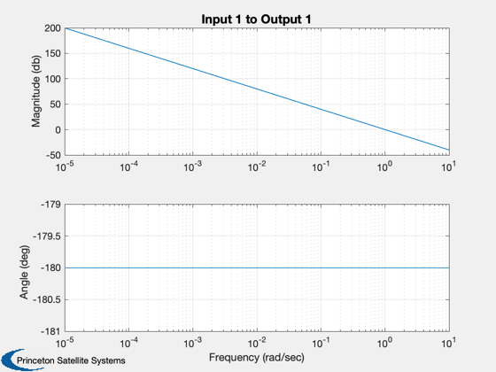
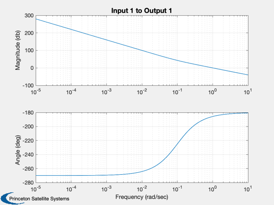
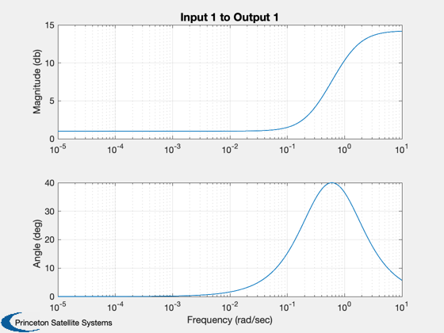
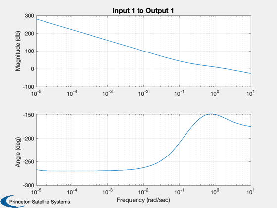

Put a series of compensators on a double integrator.
------------------------------------------------------------------------
See also TF2SS, LeadLag, FResp, Series
------------------------------------------------------------------------
Contents
Double integrator
a = [0 1;0 0]; b = [0;1];
c = [1 0]; d = 0;
w = logspace(-5,1,1000);
FResp(a,b,c,d,1,1,w)
set(gcf,'name','Double Integrator')

Now we have more phase shift
[aI,bI,cI,dI] = tf2ss( [1 0.1],[1 0] );
[a,b,c,d] = Series(a,b,c,d,aI,bI,cI,dI);
FResp(a,b,c,d,1,1,w)
set(gcf,'name','Open Loop with Integrator')
disp('Closed loop with integrator is unstable')
eig(a-b*c)
Closed loop with integrator is unstable
ans =
0.049514 + 1.0037i
0.049514 - 1.0037i
-0.099029 + 0i

Create a lead compensator with 40 deg of lead. Look at it alone.
[aL,bL,cL,dL] = LeadLag(0.6,40,1);
FResp(aL,bL,cL,dL,1,1,w)
set(gcf,'name','Lead Compensator')

Add the lead in series
[a,b,c,d] = Series(a,b,c,d,aL,bL,cL,dL);
FResp(a,b,c,d,1,1,w,'unwrap');
set(gcf,'name','Open Loop with Lead')
disp('Closed loop with lead is stable')
eig(a-b*c)
Closed loop with lead is stable
ans =
-0.44084 + 2.1397i
-0.44084 - 2.1397i
-0.30625 + 0i
-0.098774 + 0i
